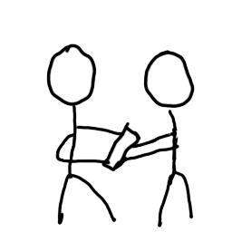
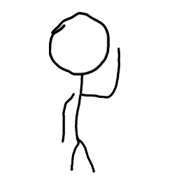
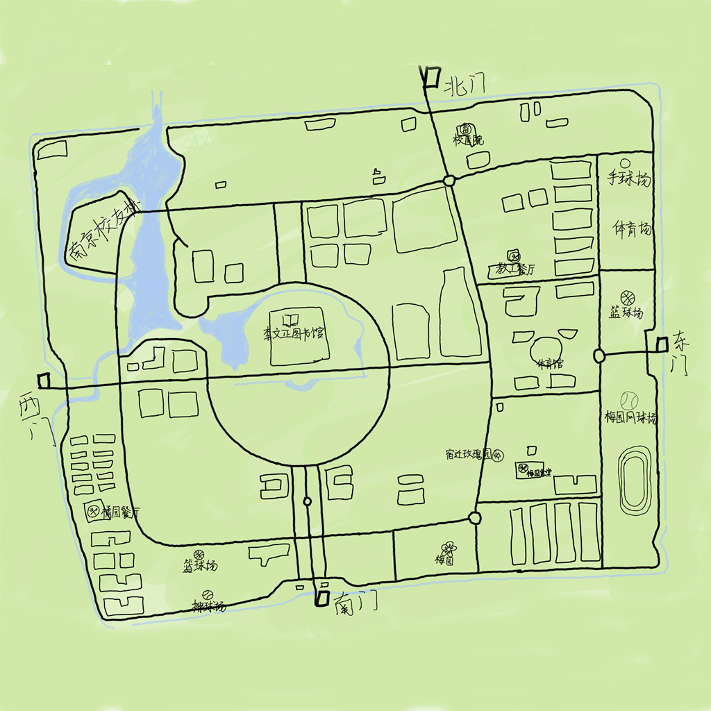

游记 流水账
OOAD凉凉
冲冲冲？
刚刚搞定双创的结项答辩、各科作业、论文复现等等一系列手边工作，月考与Gizmo ball的ddl又立马向我挥手。正当我戴着SKG边电自己脖子边没有灵魂的敲着代码，看见了一位学弟大佬(ccy)找人一天后去hackathon的微信消息。在其简短介绍后我感觉非常有意思就是不想复习, 可是下周一回来就月考加大堆ddl——“社团能报销”学弟的一句话不禁令我陷入了沉思。但是我仍需要表现出对OOAD零预习进度的尊重，于是我说“今天你没找到人我就去”。其实当时已经23.50+ 于是怀着对南京之行的憧憬和对考试与作业的歉意下，我们选择周五下午冲冲冲。
南航——东南大学
不得不说，在同team的南航朋友(冉兄)一直说他们校区很小的时候，我选择了相信。但是当我们周五晚上实际抵达将军路校区，我发现事情并不这么简单。
首先和我们学校的中北校区比较大小这我就不用多提了，我觉得有意思的是“海陆空三桥”(我自己乱叫的)跨越高速公路，将学校划成了两个半区，这让人不禁有一种在小城池里面的感觉。。。但是校区里面没有共享单车且不让骑车是挺难的。
鉴于晚上在旅店内搞了搞azure、初步理了理功能和需求等，躺下时候已经比较晚了。然而蚊子仍然选择在夜间缠绕我，属实难顶。不过第二天不间断的闹铃居然让我吃上了早饭，真是太令人感动了。。。
刚刚抵达东南大学时候天气是比较热的，和周日离开时候呈现出鲜明对比。我们抵达时教室人已经很多了，不过幸好我们赶上了领贴纸，电脑有了贴纸连代码也升华了(确信)。
接下来大多数时间便是在机房度过了。总体感觉下来东南大学的建筑比较稀疏，南航的稍微密集一点 (完美的分析与对比)。
喂食
本人对食物一向不挑剔，也不爱拍照，但是为了让游记更像游记，决定强行糊点东西。
在南航地头蛇冉兄的带领下，我们去尝试了没有啥味道但是能填饱肚子的川菜和听说比较有名的青浦酿(应该是这样打的吧), 没拍照，不过有点像升级版冰粉，配料很足。
在东南大学拥有大量的饭票，除了需要走比较久去食堂外，体验挺不错，对我个人来讲，梅园有个土豆烧牛肉味道很好而且只要12。
当大家都说桃园味道不佳后，我们决定还是不去尝试，稳一手海阔天空。有意思的是，我发现牛肉粉丝汤已经变成了大学校园的标配？
是的，零食也是极为重要的一环。参加这种熬夜比赛，零食和水是必须的，主办方提供了很多种类的零食，可惜都撑不过三分钟便被一抢而空。
当然作为旅游队伍，我们几乎每次都能吃上零食，这得益于组员们强大的信息收集能力与反应速度。（不过热水真的没找到，以致于学弟的咖啡无用武之地）。
比赛
事先没有准备的话是难顶的
横冲直撞
在ccy阐述其大致思路后(和跑步相关的游戏)，我决定就按照他的来。但当周五晚上我准备开个头时，发现是只有一个大致思路，具体机制和实现形式还很模糊。于是在初步梳理了一下思路后，建了表，着手写接口文档。幸而我对这些已经较熟悉，ccy也十分给力，在前端方面能独挑大梁，于是大家第一步“面向接口文档编程”就行了。
功能上的繁复与时间的紧迫程度迫使我直接掏出了自己最熟悉的技术来做，因此在技术实现上没有啥创新（不过达成在第五种语言上用经纬度计算距离成就），在身在机房的开发时间里，抛去复用以前的一些代码和注释代码，我大致写了一千六百多行代码，我们的功能(抛去性能)倒是实现了大部分。
带抽象家
专业绘制
冉兄对安卓较为熟悉，但对web和游戏方面稍微弱点，于是开始绘制起了我们的设计图，图片的风格令人十分满意————抽象中又带着解释性文字。
接下来我从上面截取的图片挑取部分来做做分析。
此为是group的owner进行拉人操作。

group的owner转移小组所有权给一位组员。

这是group的一位成员主动选择离开小组。当然，我们最喜欢的还是下面这张地图。

它也是绘制而成的，为了找到最有价值的路线和坐标点，学弟和南航冉兄在夜间去校内骑车不断将坐标点上传。每每想到他们在寒风中骑车，坐在教室的我就会暂时放下妙脆角，吃一口奥利奥，用甜味化解心酸。
夜间插曲
不得不说，QQ群属实人才辈出。即使在深夜，也有人在“操作”，对此我也十分想加入，可惜操作系统暂不允许，实乃一大遗憾。
HackerGo
周日醒来后整体时间比较紧张，需要做的较多：联调与部署、写计划书、导出接口文档、整理素材和录屏等，一开始说中午十二点便截止，为了尽快搞定，一些bug还没调就得匆匆部署进行录屏，尴尬的是没上https，没法用定位，因此前端还不能部署，于是我们直接手机弄好环境来跑以便录屏。(后面听说时间延迟了，也懒得再搞了)
刚开始答辩的几组的爆破音很是恐怖，于是我选择先小睡一觉，醒来改改模板一个PPT应该就成了。可惜等我醒来，发现已经要轮到我们，于是PPT计划只得作罢 (其实还有点时间，就是不想做) 。
不得不说，ccy的想法其实是及其有意思的，只可惜到最后已经没啥时间了，无法很好讲述出其特色，因此还是在此处把我们之前写的的思路和完成情况贴份出来——构思、done与todo
对于我个人来言，写隐藏任务是最有意思的，走在路上突然弹出一个隐藏任务，想想就有趣（只是有一定几率刷到河里hh），可惜的是在地图上留言/留语音等一些好玩的功能实在还没来得及操作。
最后
虽然时间的短暂致使大部分作品都可能有点bug，完成度也不是特别高，但是现场的的确确出现了很多有趣的作品，也有很多创意让人眼前一亮(只是可惜中途睡着了没有听到完整版)。摸着自己的心脏和头发，我诚挚的建议各位少参加几次hackathon，能白嫖的除外。
部分图源来自“官方”摄影，且经过压缩。